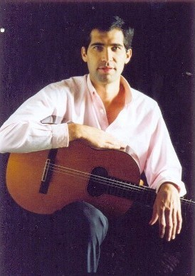

“En este momento me encuentro fundamentalmente
abocado al trabajo sobre la música argentina porque
creo que es el único campo que, por proximidad, historia y afinidad,
puedo llegar a conocer profundamente.
Así mi repertorio se ha ido poblando de obras de artistas argentinos
contemporáneos que componen
inspirados en el venero de nuestra música popular. Entre ellos puedo
mencionar a Carlos Moscardini,
Ernesto Méndez, Marcelo Coronel, Diego Castro, Eduardo Timpanaro y el
maestro Juan Falú.
La cercanía o amistad con muchos de ellos es otro factor que contribuye
a enriquecer mi trabajo
y que valoro en grado sumo.
El otro costado de mi labor lo constituye hoy la música de cámara,
de la que disfruto enormemente
y en la que me estoy perfeccionando en la Universidad de Lanús, Buenos
Aires, con excelentes profesores.”
Así nos habla de su momento actual, Pablo
Izurieta…
Conciso y con objetivos manifiestos, obliga a la meta sin dilaciones. Sabe que
sólo el perfeccionamiento constante,
le permitirá un progreso claro y que el único camino seguro es
el que se construye con arrojo.
“La música ha sido para mí un
medio para mejorarme, me ha disciplinado y enseñado a ser paciente, así
como luego de cada pequeño paso, sacar mis propias conclusiones sobre
el arte musical en particular, el arte
en general y sobre mí mismo y la vida, y considero que eso no tiene precio.
Creo sólo en el trabajo que da alegría y ésta me resulta
una actividad interesante.
Haciendo música uno puede sentirse actor, dibujante y hasta bailarín.
Una vez un maestro me dijo que
uno tiene el sonido que es capaz de imaginar ....; otro maestro, Daniel Baremboin,
dice que el piano es el instrumento de la ilusión, lo que implica el
desafío de convertir aquel mecanismo de martillos, cuerdas
y felpa en una orquesta que atesore todos los timbres de la misma.
Sostengo que todos los instrumentos nos presentan este desafío; para
sortearlo el intérprete debe
usar su imaginación y lograr, mediante un trabajo paciente, reproducir
emociones y sensaciones diversas…
casi como el mimo que construye un mundo con la sola herramienta de la sugestión”.
“Siempre pienso que afortunadamente el arte
se sigue enseñando de la misma manera desde hace siglos y principalmente
consiste en el contacto personal con los maestros. Observándolos, escuchándolos,
hablando con ellos aprendemos lo que necesitamos saber, al menos para comenzar
a andar.
Luego vienen los intentos de realizar nuestro propio camino; donde cada decisión
es importante: con quien
nos asociamos, donde abrevamos, qué descartamos, qué atesoramos,
qué defendemos, cuáles son las cosas
que no estamos dispuestos a negociar, serán los pilares que sostendrán
nuestro arte.
En definitiva un maestro es alguien que nos ofrece una visión del arte
que está unida a una idea de ética. Por
eso considero que un músico no solo aprende de los pares sino también
de la obra de los escritores,
de los pintores, de los pensadores, de las señales que nos ofrece la
vida a cada paso y de todo aquello en
donde subyace la ética como meta ultima de las ambiciones humanas verdaderas.
Pienso que el arte debe servir
a los mismos fines de la ética y que ninguna acción en pos del
arte se justifica si se opone a los principios éticos.
Prefiero a los maestros “facilitadores”, que son los que nos enseñan
un camino y nos alientan a recorrerlo estimulando nuestras propias armas, las
innatas y las adquiridas; por el contrario rechazo a aquellos que ponen
las metas en un punto aparentemente inalcanzable como si esta fuera una actividad
solo para elegidos; y los elegidos, y a su vez los que eligen, son ellos. Detesto
cuando el arte se asocia con alguna forma de poder; esto ha producido obras
monstruosas además de provocar mucho sufrimiento.
Como profesor trato de no imponer al alumno mis propias metas. Intento presentarle
una propuesta de método
(del griego methodos: camino) que sea compatible con sus posibilidades y aspiraciones...”
“No tengo el miedo de muchos colegas a emitir
y recibir críticas. Por otra parte lamento que estemos tan lejos
de aquellas épocas de polémicas por cuestiones artísticas
que muchas veces alcanzaban los medios públicos y en
las que los artistas tomaban una posición que resumía su compromiso
estético e ideológico; y digo
lamentablemente porque este ejercicio es sumamente revitalizador de la actividad,
entre otras cosas porque
no responde a otros intereses que las convicciones personales y porque permite
establecer puntos de referencia definidos y valientes, los cuales son claves
en la formación de las nuevas generaciones de artistas.”
 |
“Me ha costado
mucho tiempo llegar a sentir al escenario como lo que representa: un momento
único, un paréntesis en donde |
“Cuando pienso en el público lo hago
de la manera más generosa de que soy capaz: una vez en el escenariome
brindo por entero y trato de ofrecer al público cosas interesantes todo
el tiempo sin esperar nada a cambio. Cuando la entrega es plena, la energía
del público llega al intérprete; es allí donde se construye
algo que
puede ser efímero o memorable, pero que siempre es intenso.”
“Creo en el legado de los artistas que maduran su obra a lo largo del
tiempo, con sinceridad, con obstinación;
creo en la obra que reúne y condensa los trabajos, las vivencias, los
dolores de una vida en una o dos ideas importantes expresadas en clave artística
.Pienso en Atahualpa y su amor a la tierra, en Piazzolla …
Por otra parte no me fío de los que construyen su obra respaldados solamente
por la voluntad y la ansiedad buscando la “novedad” o la “vigencia”.
Yupanqui no permanece vigente porque una banda de rock
ponga música a una letra suya; lo es, y creo que lo será siempre,
por la fuerza y autoridad de su propia voz.
Cuando imagino mi concierto ideal lo hago cada vez más alejado de la
idea de tocar la mayor cantidad de
notas posibles; me interesa en cambio trabajar en la construcción de
una visión, de un mensaje que aúne
mis preocupaciones permanentes con mi deseo de belleza y poder transmitir eso
al público en
aquella “comunión” de la que hablaba el gran Casals.”
Y así nos deja este joven, que ha profundizado
lo que hace y busca; no conformándose con quedar en
los primeros peldaños de un conocimiento, sino día a día,
distinguir otros nuevos, que se constituyen
en nuevos desafíos a conquistar.
Le gusta proyectarse en la gente y en el tiempo
y nos deja vislumbrar su existencia como un todo
acabado y armónico.
Quizás la forma más certera de describirlo, es a través
del tema "Laurel" de Juan Falú, que emana alegría
y fuerza y se expresa en cálido ritmo, como un canto optimista a la vida.
Otros temas pueden oírse en http://www.seiscuerdas.com/castro-izurieta/audio___midi.htm